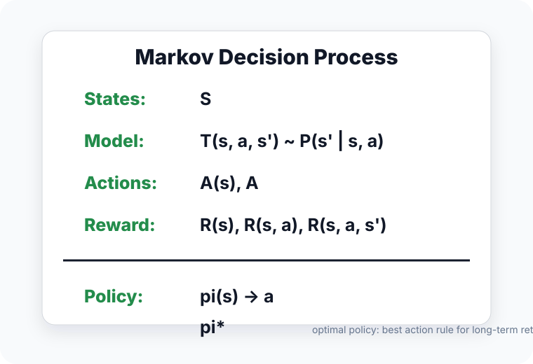
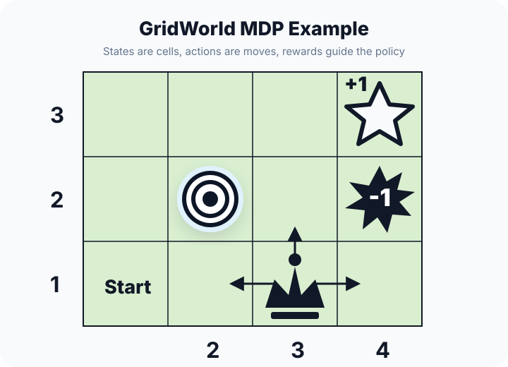

🎮 MDP马尔可夫决策过程
Markov Decision Process
Lecture 23 introduces reinforcement learning as decision making with delayed feedback. A Markov Decision Process is the formal language for an agent that interacts with an environment over time.
1. Concept Understanding
An MDP models sequential decisions where outcomes are partly random and partly controlled by a decision-maker. At each time step, the agent observes a state, chooses an action, receives a scalar reward, and moves to the next state.
The formal object is
- $\mathcal{S}$: possible states.
- $\mathcal{A}$: possible actions.
- $P(s'\mid s,a)$: transition distribution.
- $R(s,a)$: immediate reward.
- $\gamma\in[0,1)$: discount factor for future rewards; with bounded rewards, it keeps infinite-horizon returns finite.


2. Plain-English Explanation
Think of a game. The screen is the state. The button you press is the action. The score change is the reward. The game engine decides the next screen.
Supervised learning gives immediate labels. Reinforcement learning often gives delayed feedback: you may only learn many moves later whether earlier choices were good.
3. Core Intuition
The Markov property says the current state contains enough information for predicting the next state distribution once the action is chosen. The past can matter only through how it is summarized in the current state.
This is the first-order Markov assumption. If the observation is not actually Markov, standard Bellman, dynamic programming, and RL guarantees apply only after the state is augmented with enough hidden or historical information.
This matters because Bellman equations and dynamic programming rely on breaking a long decision problem into one-step pieces: immediate reward plus value of the next state.
4. Key Equations
What it does. An MDP is the full mathematical description of an RL environment: states, actions, dynamics, rewards, and how much future reward is discounted.
What it does. Once the current state and action are known, the old history gives no extra information about the next state.
What it does. A trajectory is one sampled rollout through the environment: state, action, reward, next state, and so on.
What it does. A deterministic policy chooses one fixed action for each state.
What it does. A stochastic policy returns a probability distribution over actions, then samples an action.
What it does. The objective is expected future reward, with farther rewards multiplied by smaller powers of γ.
5. Worked Examples
Example 1 · training a dog to fetch
Source: Lecture 23, p. 7.
The state may include where the dog and ball are, the action is the command or movement, and the reward is praise or success. The agent learns actions that lead to future reward, not just immediate movement.
Example 2 · GridWorld or Pacman
Source: Lecture 23, p. 12.
States are grid positions or game configurations. Actions are moves. Rewards may be goal points, food, penalties, or losing states. The transition can be deterministic or stochastic depending on the environment.
Example 3 · stochastic transition
Source: Lecture 23, p. 13.
If an action can slip or fail, the transition is not a single next state but a distribution $P(\cdot\mid s,a)$. The value equations then average over possible next states.
6. Problem-Solving Tips
- Start every MDP word problem by listing $\mathcal{S},\mathcal{A},P,R,\gamma$.
- Check whether the proposed state is truly Markov; add history if needed.
- Separate agent behavior $\pi(a\mid s)$ from environment dynamics $P(s'\mid s,a)$.
- Look for delayed reward; that is the main reason we need RL rather than ordinary supervised learning.
- If $P$ and $R$ are known, think planning or dynamic programming. If only samples are available, think model-free learning.
7. Common Mistakes
- Confusing policy with transition probability.
- Using an observation that does not contain enough information to be Markov.
- Ignoring discount factor $\gamma$ when computing long-term reward.
- Treating a trajectory as just states; actions and rewards are part of the sample.
- Assuming feedback is immediate like supervised labels.
8. Exam Focus
- Define an MDP tuple and each component.
- State the first-order Markov property.
- Define trajectory and policy, including deterministic and stochastic versions.
- Explain why RL differs from supervised learning: delayed feedback and policy-dependent state distributions.
9. Quick Checklist
- MDP = $(\mathcal{S},\mathcal{A},P,R,\gamma)$.
- Markov = current state/action is enough for the next-state distribution.
- Policy chooses actions; transition belongs to the environment.
- Trajectory includes states, actions, and rewards.
- Goal = maximize expected discounted return.
Markov Decision Process · 马尔可夫决策过程
Lecture 23 把 reinforcement learning 引入为“带 delayed feedback 的序列决策”。MDP 是描述 agent 与 environment 长期交互的正式语言。
1. 概念理解
MDP 描述一连串决策：结果一部分来自 environment 的随机性，一部分由 decision-maker / agent 的 action 控制。每一步 agent 观察 state，选择 action，得到 scalar reward，然后 environment 转移到 next state。
正式写成：
- $\mathcal{S}$：状态集合。
- $\mathcal{A}$：动作集合。
- $P(s'\mid s,a)$：transition distribution。
- $R(s,a)$：immediate reward。
- $\gamma\in[0,1)$：future reward 的 discount factor；reward 有界时，它能让 infinite-horizon return 保持有限。
2. 大白话理解
想象一个游戏：屏幕画面是 state，按哪个键是 action，分数变化是 reward，游戏引擎决定 next state。
supervised learning 通常马上给 label；RL 经常是 delayed feedback：你走了很多步之后，才知道前面某个选择到底好不好。
3. 核心直觉
Markov property 说：只要给定当前 state 和 action，预测下一步不需要再看完整 history。过去当然可能重要，但它必须已经被总结进当前 state 里。
这就是 first-order Markov assumption。如果 observation 本身不满足 Markov，标准 Bellman、dynamic programming、RL convergence guarantee 只有在你把足够的 hidden/history information 补进 state 后才成立。
这个性质让 Bellman equation 和 dynamic programming 成立：长问题可以拆成“一步 reward + next state value”。
4. 关键公式
这个公式在做什么？ MDP 是 RL 环境的完整数学描述：状态、动作、环境转移、奖励，以及未来奖励如何折扣。
这个公式在做什么？ 只要知道当前 state 和 action，过去完整 history 就不再提供额外信息。state 必须已经总结了有用的过去。
这个公式在做什么？ Trajectory 是一次 rollout 的完整交互路径：状态、动作、奖励、下一个状态，如此重复。
这个公式在做什么？ 确定性策略表示：每个 state 都对应一个固定 action。
这个公式在做什么？ 随机策略给出动作概率分布，然后从这个分布里采样 action。
这个公式在做什么？ 目标是未来总奖励的期望；越远的奖励乘上越高次的 γ，因此影响被折扣。
5. 例题精解
例 1 · 训练狗捡球
出处：Lecture 23, p. 7。
state 可以包含狗和球的位置，action 是命令或移动，reward 是奖励或完成任务。agent 学的是哪些 action 会带来未来 reward，不只是眼前动作。
例 2 · GridWorld / Pacman
出处：Lecture 23, p. 12。
state 是格子位置或游戏配置，action 是移动，reward 可以是到达目标、吃到食物、惩罚或失败。transition 可能 deterministic，也可能 stochastic。
例 3 · stochastic transition
出处：Lecture 23, p. 13。
如果动作可能打滑或失败，next state 就不是一个确定状态，而是 distribution $P(\cdot\mid s,a)$。value equation 里就要对可能的 next states 取 expectation。
6. 题型与解题步骤
- MDP 文字题先列 $\mathcal{S},\mathcal{A},P,R,\gamma$。
- 检查 state 是否真的 Markov；不够就把 history 加进去。
- 区分 agent 的 $\pi(a\mid s)$ 和 environment 的 $P(s'\mid s,a)$。
- 看到 delayed reward，就想到 RL 而不是普通 supervised learning。
- 已知 $P,R$ 用 planning / DP；只有 samples 用 model-free learning。
7. 常见错误
- 混淆 policy 和 transition probability。
- state 信息不够，却默认它满足 Markov property。
- 算长期 reward 时忘记 discount factor $\gamma$。
- 把 trajectory 只写成 states；actions 和 rewards 也是样本的一部分。
- 把 RL feedback 当成 supervised label 那样立即出现。
8. 考试重点
- 会定义 MDP tuple，并解释每个 component。
- 会写 first-order Markov property。
- 会定义 trajectory 和 policy，包括 deterministic / stochastic 两种。
- 会解释 RL 与 supervised learning 的差别：delayed feedback 和 policy-dependent state distribution。
9. 速记清单
- MDP = $(\mathcal{S},\mathcal{A},P,R,\gamma)$。
- Markov = 当前 state/action 足够决定 next-state distribution。
- Policy 选动作；transition 属于 environment。
- Trajectory 包含 states、actions、rewards。
- 目标 = maximize expected discounted return。